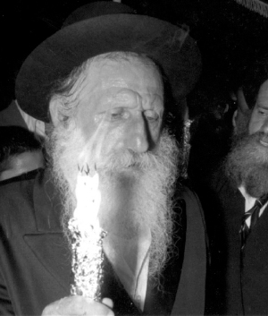
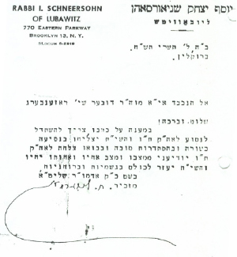

R’ Berish
A mashpia, a symbol of bittul, a lamdan, a Chassid, mekushar – all these descriptions apply to R’ Dov Berish Rosenberg, mashpia in the Chabad community of Lud. R’ Berish was a unique person and only those who were close to him knew a little about this esteemed Chassid, who lit the way for many toward a life of Judaism and Chassidus. * Part 1 of 2

The fact that he marked these days testifies to the many miracles that he experienced in his life. He celebrated to express his thanks to Hashem for all that He did for him during the harsh days behind the Iron Curtain until he made aliya where he was able to educate his children in the ways of Torah and Chassidus without interference.
CHILDHOOD YEARS
R’ Dov Berish Rosenberg, known as R’ Berish, was born in Teshin, Czechoslovakia to R’ Shimon and Rivka, may Hashem avenge their blood, on 18 Sivan 5679/1919. R’ Berish was born to an illustrious family. His paternal grandfather, R’ Shimon, was a talmid-chaver of the B’nei Yissoschor of Dinov. His mother was a descendant of the Tosafos Yom Tov.
R’ Dov Berish was the seventh of nine children. When he was a child a tragedy in the family occurred. His younger brother Moshe became critically ill and died at the tender age of 8. His father was inconsolable and cried terribly. Not long after, another child became critically sick. His father asked his Rebbe for a bracha and his Rebbe said, “Don’t cry so much. When you stop crying, the child will recover.”
That is what happened. The child recovered and from then on, his father never mentioned his son Moshe again.
Until Berish became bar mitzva he learned with R’ Meir Teitelbaum, the rav of Teshin and the grandson of the Yismach Moshe of Ujhel. After his bar mitzva he went to learn in Yeshivas Kesser Torah in the town of Kshaniv and in another yeshiva in Cracow. In these yeshivos he was nicknamed “Berish Teshiner.” He studied assiduously and his conduct was special. He was a quiet, modest boy, refined and was barely known by his peers.
When he was 18 he began learning in the Shomrei Shabbos beis midrash in his town. At that time, he was a Radomsker Chassid and now and then he would go to the Admur of Radomsk.
R’ Berish did not learn in Yeshivas Tomchei T’mimim which he later regretted. R’ Dov Chaskind related:
“During the period when I learned in the yeshiva in Lud, one Shabbos I walked into the old shul near the train station. A farbrengen was taking place there and I remember R’ Berish sitting at the table and crying over not having had the merit to learn in Tomchei T’mimim. At that time I had been thinking of leaving the yeshiva, but when I saw this older man sitting and crying over not having learned in Tomchei T’mimim, I reconsidered and stayed in yeshiva.”
R’ Berish’s parents were tremendously G-d fearing. His father sewed pants for a living and as he worked he reviewed chapters of Zohar. His mother traveled from city to city to sell merchandise in the markets.
THE ONLY ONE WHO REFUSED
When World War II began all men were drafted. R’ Berish also had to present himself to the draft board, but before he did so, he went to the Admur of Radomsk for a bracha. The Rebbe told him, “You will not hold a rifle!” A miracle occurred that he was not drafted throughout the war.
His father, R’ Shimon, spoke to his three sons, Shlomo, Leibush and Berish and said, “Run for your lives! Shlomo, as the oldest, watch over Berish carefully!” Berish was 20 at the time.
The three brothers fled in the direction of Russia. They suffered tremendously as they traveled, mainly from starvation, cold and privation. Starvation had felled countless people and the situation was dire. Religious Jews were forced to eat non-kosher food in order to survive, for saving a life supersedes all else except for the three known sins. Despite this, Berish refused to eat treif. His friend, R’ Shlomo Zalmanowitz said, “Berish was the only one who refused to eat treif food. His older brother Shlomo watched over him, as his father requested, and he pleaded with Berish to eat, but he refused. Shlomo asked his friends to persuade him but he did not listen to them either.”
Shlomo died in Russia from dysentery. Then Leibush took responsibility for his younger brother Berish. The two brothers wandered from place to place and were saved from death only with big miracles. They finally arrived in Lemberg (Lvov) on the Polish-Russian border. Here, R’ Berish met the Chassid, R’ Chaim Meir Liss, who was mekarev him and gave him his first taste of Chabad Chassidus.
The Russian authorities did not like the refugees assembling on the border while the country was in a state of war. They announced that whoever wanted Russian citizenship could have it and whoever declined would be sent to Germany. Some Jews opted to suffer under the Germans rather than the communists, including the Rosenberg brothers. They signed that they wanted to go back to Germany. Then they discovered that it was a ruse. The Russians said that whoever signed to wanting to return to Germany was considered a traitor and would be sent to Siberia.
IN A DITCH WITH HIS T’FILLIN
R’ Berish was taken to a Siberian labor camp. There too, he retained his Jewish stubbornness and did not consume non-kosher food or chametz on Pesach. He was also moser nefesh for t’filla and t’fillin.
On the morning of Tisha B’Av 1940, the camp guards ordered all the Jews to sit in an open field and wait until 2:00. Then came a truck with armed soldiers who cast terror upon the Jews. One by one, the Jews filed passed the soldiers who confiscated all their Jewish objects: t’fillin, Gemaras, s’farim etc.
When it was R’ Berish’s turn, they took his t’fillin which he had guarded throughout his journeys. The rest of the Jews hastily gave up their precious holy items in fear for their lives, but R’ Berish could not forgo his t’fillin. He snatched the t’fillin back from the soldier even though he knew this could cost him his life. The soldier grabbed him and threw him and his t’fillin into a ditch along with the rest of the Jewish items. R’ Berish barely managed to extricate himself from the ditch but he lost the t’fillin.
There was a Jew there from the city of Lodz who saw R’ Berish’s great mesirus nefesh for his t’fillin and his tremendous sorrow afterward. This man endangered himself and snuck a pair of t’fillin off the pile of confiscated items and gave them to Berish, to his great delight.
The next day, R’ Berish met with R’ Tzvi Elimelech, the son of the rav of Tomashov (one of the great disciples of the Divrei Chaim of Sanz) and saw that he was very sad. When R’ Berish asked him what the problem was, he said he had lost t’fillin that were very dear to him because they had belonged to his father.
“Did you have any sign on them proving that they were yours?” asked R’ Berish.
“Yes,” said R’ Tzvi Elimelech. “On the t’fillin bag there were the letters TE embroidered.”
R’ Berish looked at the t’fillin bag he had and saw that it belonged to R’ Tzvi Elimelech. He returned them, though not before getting a promise that he could use them every day.
When friends asked R’ Berish why he returned the t’fillin when R’ Tzvi Elimelech had despaired of them and the halacha is he did not have to return them, R’ Berish said, “If I deserve to have t’fillin, Hashem will give me other t’fillin.”
When the man from Lodz found out that R’ Berish no longer had the t’fillin, he secretly went to the storehouse where Jewish items had been stored and stole two pairs of t’fillin which he gave to R’ Berish. By divine providence, they were a Rashi pair and a Rabbeinu Tam pair. R’ Berish allowed many exiled Jews in the camp to use these t’fillin. He guarded them until he arrived in Eretz Yisroel and considered it a big z’chus to continue using them.
He was released from camp on 7 Elul and three weeks later, on Erev Rosh HaShana 5703/1942, he arrived in Samarkand where there was a large concentration of Jewish refugees including many Chabad Chassidim. He met R’ Chaim Meir Liss again who continued to teach him Chassidus.
THE WEDDING
The war period was particularly difficult. R’ Berish was constantly plagued by thoughts of what had happened to the rest of his family who had remained behind. In the meantime, he began a new chapter in life when, on 10 Kislev 5704 he became engaged to Itta Lishner. His wife wrote the following in her memoirs:
“5704. The war began with no salvation in sight.
“One day, a Jew by the name of Yitzchok Isaac Elbaum came to us; he used to visit us while my father was still alive. He began talking to my mother about the difficult situation and about his plans. ‘Mrs. Lishner,’ he said to my mother, ‘The Jewish people is shrinking. Good bachurim are dying of starvation, cold and exhaustion. You have a daughter. Take one of the bachurim to marry her and he will also help you raise the children.’
“My mother answered him in great anguish. ‘I don’t have a piece of bread to give the children and my daughter is barefoot. How can I think of taking a step like that?’ But he insisted and said to her, ‘In the merit of this great mitzva, Hashem will help you. Do not think of anything except enabling the remnant of Israel to continue to exist.’
“He would come every day and talk to her until he convinced her. So on 10 Kislev 5704 I became engaged to Dov Berish Rosenberg and on 18 Teves they put up the chuppa. It was a Friday. A chuppa was made without a seuda and there was no celebration.”
Distinguished Chassidim in Samarkand attended the wedding. The mesader kiddushin was R’ Yeshaya Marinovsky and the k’suba was written by R’ Nachum Shmaryahu Sasonkin.
The wedding took place on a Friday in order not to trouble too many people and also because of the starvation of those days. There was barely anything to serve the guests who attended the wedding.
The next day, many guests came for the Shabbos Sheva brachos and they danced all night. R’ Yaakov Galinsky, a good friend of Berish (who passed away this past January at the age of 93 and was a famous maggid in Yerushalayim), danced on the table with great joy and said badchanus.
The couple lived in her mother’s home, since her father had died a few months earlier. R’ Berish quickly stepped into the shoes of the head of the household. He took care to educate and support his wife’s family.
Shortly after the wedding, during Pesach 1944, R’ Berish became sick with pneumonia; it was a miracle that he survived. Two months later he had a high fever. He suffered for two months (the doctor explained that it was paratyphoid), but recovered from this too.

The young couple began getting involved with Lubavitch, in no small part thanks to Avremel, a Lubavitcher bachur who introduced himself with that name. They knew nothing about him except for the fact that he learned in Chabad yeshivos. Avremel came to the house a lot and learned Chassidus with R’ Berish. Through him, they became mekushar to the Rebbe Rayatz even though they had never met him and only saw his face in a picture.
R’ Berish had a special relationship with R’ Chaim Zalman Kozliner (ChaZaK) who would tell him where farbrengens would be held. In those days, under communist oppression, the location of farbrengens was kept secret, but R’ Chaim Zalman knew that R’ Berish was very interested in Chassidus and so he took the chance and told him where they were held. Their friendship was so great that when R’ Berish passed away, they did not tell ChaZaK.
Back to the war. Most men had been drafted at the beginning of the war. As hostilities increased, additional drafts were done and whoever wasn’t drafted at the beginning of the war, was taken to the front to dig ditches. Many Jews avoided the army because it was impossible to keep mitzvos there.
One day, soldiers knocked at the door. R’ Berish immediately lay down on a bed in one of the rooms upon which they threw all the rags and dirty clothes available at the time in the house. The soldiers began searching and felt the pile of rags on the bed and he even felt their hands, but they did not notice him and that is how he was saved from the draft. A few days later, soldiers came again and he hid under the bed and was not discovered.
The bracha of the Radomsker Rebbe was fulfilled once again and he never served in the army.
In Nissan 1945, R’ Berish’s first daughter was born. Since his father-in-law, R’ Sholom, had died just two and a half years earlier, he consulted with the mashpia, R’ Nissan Nemanov about what to name his daughter. R’ Nissan told him to call her Shulamis. R’ Berish listened to this advice (she is the wife of R’ Yitzchok Yehuda Yaroslavsky, mazkir of the beis din rabbanei Chabad).
PLEASE GIVE US TZITZIS!
The war ended at the end of Iyar 5705. It was only at the war’s end that he found out that his parents and other family members had been killed.
With the end of the war, many refugees made their way back to the countries they came from. Others wanted to make aliya or to immigrate to the US, but the first thing to do was to get out of the Soviet Union.
Erev Shavuos 1946, R’ Berish and his wife and baby boarded the train for Poland. Throughout his journeys, until he reached Eretz Yisroel, he tried to stay with the Chabad Chassidim. Avremel hid in their compartment all the way to Poland.
The train arrived near the city of Vrotslav, Poland at the beginning of Tammuz, where R’ Berish and his family got off. The family was given a small room in the cellar of the community building where many Jewish refugees lived. Their second daughter was born in that cellar, Esther Baila (the wife of R’ Yitzchok Dovid Grossman, rav of Migdal HaEmek). Her birth entailed big miracles.
In those days, many Jews returned to the places where they lived before the war in an attempt to find their homes and get their property back. Some went to the cemeteries where their family members lay buried and others went to locate surviving family members.
One day, two children by the names of Chaim and Lemel Zilber came to R’ Berish and said their parents had gone to Prosteshov, Czechoslovakia where they lived before the war and left them alone with a group of children.
“They took away our tzitzis, but we are Jews and we want to remain Jews!” they said in tears. “Please give us tzitzis!”
R’ Berish had two pairs (and that was considered a lot in those days) and he gave them one pair. With his big heart, he decided to adopt the two boys. “From now on,” he said, “you stay with me. You will be considered my wife’s brothers.” (That was because he was too young to say they were his children). The two children stayed with the group of Lubavitcher refugees which included R’ Berish.
The Polish gentiles were just as anti-Semitic after the war. They were furious to see Jews returning to Poland after being sure they had been annihilated by the Germans. They began persecuting the Jews and caused them many problems. One time, when R’ Berish was on a local train, they tried to throw him off while the train was moving. Another time, they tried to ignite his beard.
Seeing this blatant hatred, R’ Berish decided to leave Poland. His baby daughter was just two weeks old when the Rosenbergs set out again. They passed the town where R’ Berish had been born, Teshin, which was partly Polish and partly Czech. From there they continued to Austria and from there to Germany.
When they arrived in Munich, they were astonished to find the parents of the Zilber boys. The reunion was intensely emotional. The boys joined their parents and they parted ways with the Rosenbergs.
From Munich they went to the DP camps in Poking. Only then, when they were far from the reach of the cursed communists, did Avremel tell them that his real name was Elchanan. He was the Chassid, R’ Elchanan Chonye Reitzes.
THE REBBE RAYATZ TOLD THEM TO MAKE ALIYA
The Rosenberg family arrived in Poking at the end of Elul 5706. The place consisted of long, wooden barracks divided into many rooms, small and big. The Rosenberg family got a medium sized room in which they put two beds for their two children. The room was crowded but they hoped it would be temporary.
The Rosenbergs lived in Poking for two years and two months under the American occupation. There was a lot of help from UNRWA and the Joint. Every day food and clothing were distributed.
Chabad Chassidim set up a yeshiva in one of the barracks and R’ Berish, who always loved immersing himself in Torah study, sat there and learned as he did in his youth and as he longed to do during the war years and its aftermath.
R’ Berish and his wife were terribly upset by the fact that they were living in camps that had enslaved Jews and killed many of them. So when France opened its doors, R’ Berish planned on moving there. Now that he was in a western country and could ask the Rebbe, he wrote a letter to the Rebbe Rayatz and asked for a bracha for going to France.
In the meantime, he began preparing for the trip. Their bundles were packed when a letter came from the Rebbe saying they should make aliya. “Thus, without understanding and without thinking overly much,” wrote Mrs. Rosenberg in her memoirs, “we opened our bundles once again and waited for G-d’s salvation as we constantly said, ‘Yehi ratzon that the Beis HaMikdash be built in our days and we merit to be in Eretz Yisroel with the Geula shleima with Moshiach Tzidkeinu, amen.’”
The British ruled Palestine at the time and they greatly limited aliya, so the possibility of getting there seemed very remote. Then on 5 Iyar 5708/1948, the British left Palestine and the Jews took over. That is when R’ Berish and his wife understood what the Rebbe meant about making aliya. In Eretz Yisroel they would be able to educate their children as they wished, to Torah and Chassidus, in the best way.
“At that time, registration began for those making aliya,” said Mrs. Rosenberg. “But we left everything to Hashem and made no efforts to force our way and so we were registered for the second transport. Our family, my mother a”h with the children, my brothers and my sister Toba who was the mother of a baby, were registered. My sister Feiga who had married in Poking, and who had a baby, remained for the third transport.
“On 10 Kislev 5708 we left Poking for Eretz Yisroel. The first stop was in Germany, in the city of Geretsreid. They put us in a small, crowded place under supervision.
“It was in the middle of the winter and it was snowy and cold without heat, but our spirits were high. It was hard with the little children; Shulamis was three and a half, Esther two and a half, and Rivka (born in Poking) was one year old.
“From Geretsreid we went by truck to a train station and took a train to the port city of Marseilles, France. We got to Marseilles on Friday morning. The weather was stormy and we could not set sail so we had to stay there and wait several days until the weather improved. For some reason, they did not give us a place to stay in Marseilles but brought us to a large facility that looked like a labor camp.”
On 5 Teves 5709, R’ Berish, his wife and three daughters boarded the ship Moledet. On Motzaei 10 Teves, after a long trip in which all the children were seasick, they could see the lights of Haifa twinkling in the distance. The next day, R’ Berish, his wife and three little girls set foot on holy land.
From Haifa they were taken to an immigrant camp in Pardes Chana. Two weeks later a delegation of Lubavitcher Chassidim showed up and they took the Rosenbergs with another ten Lubavitcher families to the Rakevet neighborhood in Lud.
To be continued, G-d willing
Berger. "R’ Berish." Beis Moshiach, no. 929 (June 11, 2014).